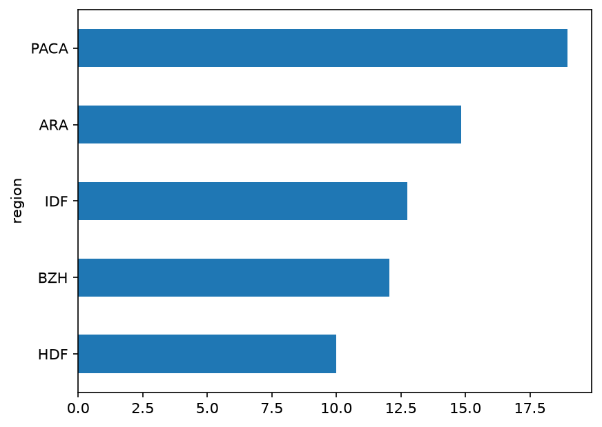
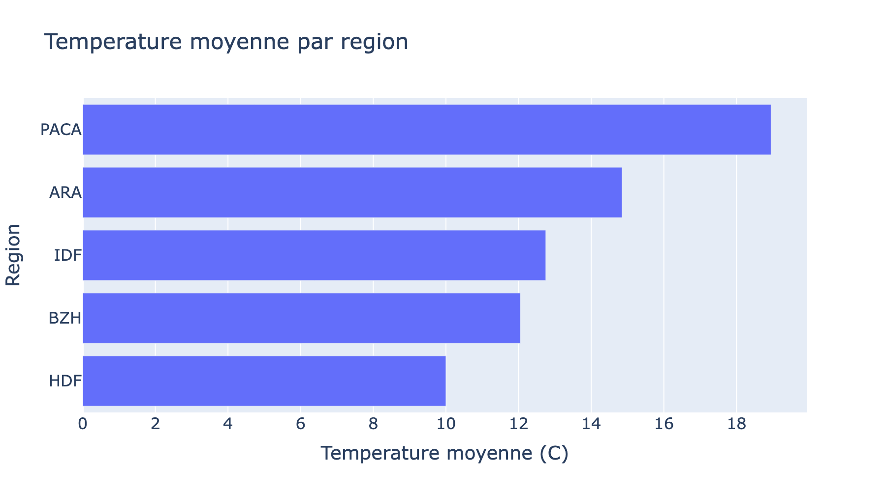
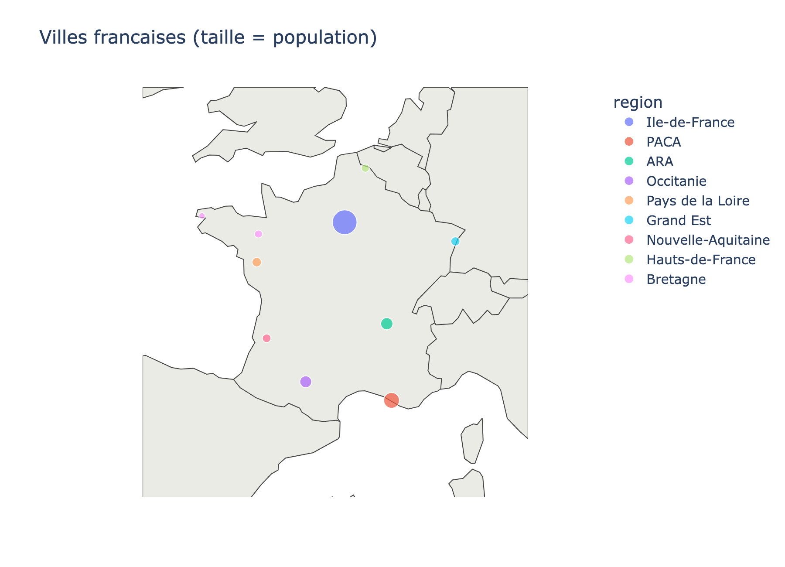

Panorama du pipeline data, rappels pandas, et comparaison des formats CSV / JSON / GeoJSON / Parquet.
01_pandas_formats_geodata.ipynb.loc/.iloc, exploration, valeurs manquantes, value_counts, jointures, filtrage, tri, groupby.plot(), PlotlySéance volontairement dense : certains exemples peuvent être parcourus rapidement à l'oral et laissés en lecture autonome dans le support.
| Séance | Cours | TP |
|---|---|---|
| 1 | Pipeline data, pandas, formats | Explorer & exporter un jeu de données spatial |
| 2 | APIs, HTTP, authentification | Micro-API FastAPI + API publique USGS |
| 3 | DuckDB & SQL analytique | Requêtes SQL sur DataFrames & Parquet |
| 4 | APIs spatiales (Copernicus, NASA) | Catalogues STAC & CMR |
| 5-6 | Projet fil rouge — pipeline complet, support de l'évaluation | |
À retenir : chaque séance construit une brique que vous réutiliserez telle quelle dans le projet fil rouge des séances 5 et 6.
De la donnée brute à la donnée exploitable : les quatre étapes qu'on va suivre tout au long du module.
Aujourd'hui : on se concentre sur la collecte et un peu de transformation. La validation en profondeur arrive en séance 5-6.
Les réflexes à avoir dès qu'on ouvre un nouveau jeu de données.
Un tableau à une dimension, indexé — comme une colonne Excel avec des étiquettes de ligne.
temperatures = pd.Series(
[12.4, 15.1, 18.7, 10.2, 11.8],
index=["Paris", "Lyon", "Marseille",
"Lille", "Brest"],
name="temperature_c",
)Un tableau à deux dimensions — plusieurs Series alignées sur le même index. C'est l'objet qu'on manipule 95 % du temps.
stations = pd.DataFrame({
"ville": ["Paris", "Lyon", "Marseille",
"Lille", "Brest"],
"temperature_c": [12.4, 15.1, 18.7, 10.2, 11.8],
"humidite_pct": [78, 65, 55, 82, 88],
})Aperçu de la Series temperatures ci-dessus :
Paris 12.4
Lyon 15.1
Marseille 18.7
Lille 10.2
Brest 11.8
Name: temperature_c, dtype: float64Chaque exemple de ce cours n'illustre qu'un usage parmi beaucoup d'autres. Avant d'utiliser une fonction, prenez le réflexe de regarder sa signature complète.
?pd.DataFrame.sort_valuesDans Jupyter : ouvre la docstring dans un panneauhelp(pd.merge)Dans un script Python classiqueShift + TabSurvolez une fonction dans une cellule pour un aperçu rapidedf.sort_values(
by, *, axis=0, ascending=True,
inplace=False, kind="quicksort",
na_position="last", ignore_index=False,
key=None,
)On n'utilise souvent que by et ascending — mais le reste existe, et na_position peut vous éviter une mauvaise surprise le jour où vos données contiennent des valeurs manquantes.
Chaque ligne porte une étiquette — l'index. Par défaut, c'est une suite d'entiers, mais ce n'est qu'un choix parmi d'autres.
stations = pd.DataFrame({
"ville": ["Paris", "Lyon", "Marseille",
"Lille", "Brest"],
"temperature_c": [12.4, 15.1, 18.7, 10.2, 11.8],
"humidite_pct": [78, 65, 55, 82, 88],
})
stations.index[0, 1, 2, 3, 4, 5]L'index n'est pas qu'un numéro de ligne : c'est ce qui permet d'aligner, de fusionner et de sélectionner des données de façon fiable — tout ce qu'on va voir ensuite s'appuie dessus.
.loc vs .ilocstations = pd.DataFrame({
"ville": ["Paris", "Lyon", "Marseille",
"Lille", "Brest"],
"temperature_c": [12.4, 15.1, 18.7, 10.2, 11.8],
"humidite_pct": [78, 65, 55, 82, 88],
})
stations.loc[2, "ville"]'Marseille'stations = pd.DataFrame({
"ville": ["Paris", "Lyon", "Marseille",
"Lille", "Brest"],
"temperature_c": [12.4, 15.1, 18.7, 10.2, 11.8],
"humidite_pct": [78, 65, 55, 82, 88],
})
stations.set_index("ville", inplace=True)
stations.iloc[2, 0]'Marseille'Avec l'index par défaut, étiquette et position coïncident. Mais dès que l'index change (tri, filtre, set_index...), seul .loc reste fiable pour retrouver une ligne par son étiquette d'origine.
set_index() & reset_index()stations = pd.DataFrame({
"ville": ["Paris", "Lyon", "Marseille", "Lille", "Brest"],
"temperature_c": [12.4, 15.1, 18.7, 10.2, 11.8],
"humidite_pct": [78, 65, 55, 82, 88],
})
stations_idx = stations.set_index("ville")
stations_idx.loc["Marseille"]temperature_c 18.7
humidite_pct 55
Name: Marseille, dtype: object# ... et pour revenir à un index numérique classique :
stations_idx.reset_index()
stations.iloc[2, 0]'Marseille'set_index() rend les lignes accessibles par un nom explicite plutôt qu'un numéro ; reset_index() fait l'inverse. On recroisera reset_index() juste après avec les résultats de groupby().
head() — un aperçu rapidestations = pd.DataFrame({
"ville": ["Paris", "Lyon", "Marseille",
"Lille", "Brest"],
"temperature_c": [12.4, 15.1, 18.7, 10.2, 11.8],
"humidite_pct": [78, 65, 55, 82, 88],
})
stations.head()| ville | temperature_c | humidite_pct | |
|---|---|---|---|
| 0 | Paris | 12.4 | 78 |
| 1 | Lyon | 15.1 | 65 |
| 2 | Marseille | 18.7 | 55 |
| 3 | Lille | 10.2 | 82 |
| 4 | Brest | 11.8 | 88 |
Par défaut, head() affiche les 5 premières lignes — ici tout le DataFrame, puisqu'il n'en contient que 5.
info() — types & valeurs manquantesstations = pd.DataFrame({
"ville": ["Paris", "Lyon", "Marseille",
"Lille", "Brest"],
"temperature_c": [12.4, 15.1, 18.7, 10.2, 11.8],
"humidite_pct": [78, 65, 55, 82, 88],
})
stations.info()<class 'pandas.DataFrame'>
RangeIndex: 5 entries, 0 to 4
Data columns (total 3 columns):
# Column Non-Null Dtype
0 ville 5 object
1 temperature_c 5 float64
2 humidite_pct 5 int64Non-Null = 5 sur chaque colonne : aucune valeur manquante ici. Ce sera rarement aussi propre avec de la vraie donnée !
describe() — statistiques descriptivesstations = pd.DataFrame({
"ville": ["Paris", "Lyon", "Marseille",
"Lille", "Brest"],
"temperature_c": [12.4, 15.1, 18.7, 10.2, 11.8],
"humidite_pct": [78, 65, 55, 82, 88],
})
stations.describe()| temperature_c | humidite_pct | |
|---|---|---|
| count | 5.0 | 5.0 |
| mean | 13.64 | 73.6 |
| std | 3.34 | 13.39 |
| min | 10.2 | 55.0 |
| 25% | 11.8 | 65.0 |
| 50% | 12.4 | 78.0 |
| 75% | 15.1 | 82.0 |
| max | 18.7 | 88.0 |
describe() ignore automatiquement les colonnes non numériques comme ville.
stations = pd.DataFrame({
"ville": ["Paris", "Lyon", "Marseille", "Lille", "Brest"],
"temperature_c": [12.4, 15.1, 18.7, 10.2, 11.8],
"humidite_pct": [78, 65, 55, 82, 88],
})
# ET : chaudes ET humides
stations[(stations["temperature_c"] > 12) & (stations["humidite_pct"] > 70)]
# OU : sèches OU chaudes
stations[(stations["humidite_pct"] < 60) | (stations["temperature_c"] > 15)]
# NÉGATION : tout sauf Paris
stations[~(stations["ville"] == "Paris")]| ville | temperature_c | humidite_pct | |
|---|---|---|---|
| 0 | Paris | 12.4 | 78 |
& = ET, | = OU, ~ = négation — et on parenthèse toujours chaque condition individuellement.
produits = pd.DataFrame({
"nom": ["iPhone 15", "Roman SF", "Pixel 8",
"BD Humour", "Cafetière"],
"categorie": ["High-Tech", "Livre", "High-Tech",
"Livre", "Maison"],
"note_evaluation": [4.8, 4.2, 4.5, 4.7, 4.1],
})
produits.sort_values(
by=["categorie", "note_evaluation"],
ascending=[True, False],
)| nom | categorie | note_evaluation | |
|---|---|---|---|
| 0 | iPhone 15 | High-Tech | 4.8 |
| 2 | Pixel 8 | High-Tech | 4.5 |
| 3 | BD Humour | Livre | 4.7 |
| 1 | Roman SF | Livre | 4.2 |
| 4 | Cafetière | Maison | 4.1 |
On trie d'abord par catégorie alphabétique ; la deuxième clé (note_evaluation, décroissante) départage ici les produits d'une même catégorie.
stations = pd.DataFrame({
"ville": ["Paris", "Lyon", "Marseille", "Lille", "Brest"],
"temperature_c": [12.4, 15.1, 18.7, 10.2, 11.8],
"humidite_pct": [78, 65, 55, 82, 88],
})
# apply() exécute une fonction sur chaque valeur
stations[stations["ville"].apply(
lambda nom: nom.lower().startswith(("l", "m"))
)]
# équivalent, vectorisé et plus rapide :
stations[stations["ville"].str.lower().str.startswith(("l", "m"))]| ville | temperature_c | humidite_pct | |
|---|---|---|---|
| 1 | Lyon | 15.1 | 65 |
| 2 | Marseille | 18.7 | 55 |
| 3 | Lille | 10.2 | 82 |
apply(lambda ...) est flexible mais lent ligne par ligne ; préférez une méthode vectorisée (.str.*) quand elle existe.
stations = pd.DataFrame({
"ville": ["Paris", "Lyon", "Marseille", "Lille", "Brest"],
"temperature_c": [12.4, 15.1, 18.7, 10.2, 11.8],
"humidite_pct":,
})
# apply() applique la règle ligne par ligne pour créer la nouvelle colonne
stations["Categorie"] = stations["temperature_c"].apply(
lambda temp: "Froid" if temp < 13 else "Chaud"
)| ville | temperature_c | humidite_pct | Categorie | |
|---|---|---|---|---|
| 0 | Paris | 12.4 | 78 | Froid |
| 1 | Lyon | 15.1 | 65 | Chaud |
| 2 | Marseille | 18.7 | 55 | Chaud |
| 3 | Lille | 10.2 | 82 | Froid |
| 4 | Brest | 11.8 | 88 | Froid |
Tout comme pour le filtrage, apply(lambda ...) est très pratique pour les règles métiers complexes ("si/sinon"), mais elle désactive la vectorisation de pandas et ralentit le calcul sur de gros volumes de données.
Pour illustrer des cas plus riches, on enrichit le relevé avec deux jours de mesure par ville.
mesures = pd.DataFrame({
"ville": ["Paris","Paris","Lyon","Lyon","Marseille","Marseille",
"Lille","Lille","Brest","Brest"],
"jour": ["lundi", "mardi"] * 5,
"region": ["IDF","IDF","ARA","ARA","PACA","PACA","HDF","HDF","BZH","BZH"],
"temperature_c": [12.4,13.1,15.1,14.6,18.7,19.2,10.2,9.8,11.8,12.3],
})
mesures.groupby(["region", "jour"])["temperature_c"].mean().reset_index() region jour temperature_c
0 ARA lundi 15.1
1 ARA mardi 14.6
2 BZH lundi 11.8
3 BZH mardi 12.3
4 HDF lundi 10.2
5 HDF mardi 9.8
6 IDF lundi 12.4
7 IDF mardi 13.1
8 PACA lundi 18.7
9 PACA mardi 19.2Sans reset_index(), le résultat a un index à deux niveaux (MultiIndex) — moins pratique à manipuler. reset_index() le transforme en colonnes normales, avec un nouvel index numérique simple.
mesures.groupby("region")["temperature_c"].agg(
["mean", "max", "min"]
)mesures.groupby("region").agg(
temp_moyenne=("temperature_c", "mean"),
temp_max=("temperature_c", "max"),
)region mean max min
ARA 14.85 15.1 14.6
BZH 12.05 12.3 11.8
HDF 10.00 10.2 9.8
IDF 12.75 13.1 12.4
PACA 18.95 19.2 18.7L'agrégation nommée (agg(nom=("colonne","fonction"))) donne des noms de colonnes propres — pratique dès qu'on enchaîne plusieurs étapes.
def amplitude(s):
return s.max() - s.min()
mesures.groupby("region")["temperature_c"].agg(amplitude)
# équivalent avec une lambda directe
mesures.groupby("region")["temperature_c"].agg(lambda s: s.max() - s.min())region
ARA 0.5
BZH 0.5
HDF 0.4
IDF 0.7
PACA 0.5
Name: temperature_c, dtype: float64agg() accepte n'importe quelle fonction qui prend une Series et renvoie une valeur unique — vos propres calculs y compris.
En pratique, un jeu de données est rarement aussi propre que celui qu'on vient de manipuler.
stations = pd.DataFrame({
"ville": ["Paris", "Lyon", "Marseille",
"Lille", "Brest"],
"temperature_c": [12.4, 15.1, 18.7, 10.2, 11.8],
"humidite_pct": [78, 65, 55, 82, 88],
})
df_test = stations.copy()
df_test.loc[[0, 3], "temperature_c"] = np.nan
df_test.isna().sum()ville 0
temperature_c 2
humidite_pct 0
dtype: int64isna() renvoie un DataFrame de booléens ; .sum() les compte colonne par colonne. On retrouve ici .loc[[0, 3], ...] : une sélection par étiquette, comme vu il y a quelques slides.
dropna()df_test.dropna(subset=["temperature_c"])fillna()mediane = df_test["temperature_c"].median()
df_test["temperature_c"].fillna(mediane)Aucun choix par défaut : dropna() perd de l'information (les lignes disparaissent), fillna() en invente (la valeur est estimée) — le bon choix dépend toujours du contexte.
value_counts() : le piège classiquedf_test contient toujours 2 valeurs manquantes dans temperature_c — regardons ce que value_counts() en fait par défaut.
df_test["temperature_c"].value_counts()15.1 1
18.7 1
11.8 1
Name: count, dtype: int64df_test["temperature_c"].value_counts(dropna=False)15.1 1
18.7 1
11.8 1
NaN 2
Name: count, dtype: int64Par défaut, value_counts() ignore les NaN — à gauche, rien n'indique qu'il manque 2 valeurs. C'est l'erreur la plus fréquente avec cette fonction.
normalize=True — des proportions plutôt que des comptessort=False — garde l'ordre d'apparition plutôt que de trier par fréquencepd.merge() est l'équivalent pandas d'un JOIN SQL (qu'on retrouvera en séance 3 avec DuckDB) : combiner deux tables sur une colonne commune.
NaN sinonNaN sinonNaN partout où ça ne correspond pashow="inner" en pratiqueOn utilise l'inner join lorsqu'on souhaite obtenir uniquement les données complètes et présentes simultanément des deux côtés.
capteurs = pd.DataFrame({
"capteur_id": ["C1", "C2", "C3"],
"ville": ["Paris", "Lyon", "Brest"],
})
mesures_recentes = pd.DataFrame({
"capteur_id": ["C1", "C2", "C9"],
"valeur": [21.4, 19.8, 15.0],
})
res = capteurs.merge(mesures_recentes, on="capteur_id", how="inner")capteur_id ville valeur
C1 Paris 21.4
C2 Lyon 19.8how="inner" ne garde que l'intersection : le capteur C3 (qui n'a pas de mesure) et le capteur C9 (qui n'a pas de ville associée) sont tous deux exclus du résultat final.
how="left" en pratiqueC'est le choix le plus fréquent pour enrichir un jeu de données principal (la table de gauche) sans risquer de perdre la moindre ligne.
capteurs = pd.DataFrame({
"capteur_id": ["C1", "C2", "C3"],
"ville": ["Paris", "Lyon", "Brest"],
})
mesures_recentes = pd.DataFrame({
"capteur_id": ["C1", "C2", "C9"],
"valeur": [21.4, 19.8, 15.0],
})
res = capteurs.merge(mesures_recentes, on="capteur_id", how="left")capteur_id ville valeur
C1 Paris 21.4
C2 Lyon 19.8
C3 Brest NaNhow="left" conserve l'intégralité de la table capteurs. Le capteur C3 reste présent, et sa valeur manquante est automatiquement complétée par un NaN. Le capteur C9 est quant à lui ignoré.
how="right" en pratiqueStrictement symétrique du type left, elle s'avère utile lorsque la table de droite sert de référence principale pour l'analyse.
capteurs = pd.DataFrame({
"capteur_id": ["C1", "C2", "C3"],
"ville": ["Paris", "Lyon", "Brest"],
})
mesures_recentes = pd.DataFrame({
"capteur_id": ["C1", "C2", "C9"],
"valeur": [21.4, 19.8, 15.0],
})
res = capteurs.merge(mesures_recentes, on="capteur_id", how="right")capteur_id ville valeur
C1 Paris 21.4
C2 Lyon 19.8
C9 NaN 15.0how="right" préserve toutes les lignes de mesures_recentes. Le capteur C3 (sans mesure) disparaît, tandis que C9 est conservé et reçoit un NaN pour sa ville manquante.
how="outer" en pratiqueL'outil idéal de diagnostic pour identifier de manière exhaustive les anomalies et les lignes orphelines entre deux sources.
capteurs = pd.DataFrame({
"capteur_id": ["C1", "C2", "C3"],
"ville": ["Paris", "Lyon", "Brest"],
})
mesures_recentes = pd.DataFrame({
"capteur_id": ["C1", "C2", "C9"],
"valeur": [21.4, 19.8, 15.0],
})
res = capteurs.merge(mesures_recentes, on="capteur_id", how="outer")capteur_id ville valeur
C1 Paris 21.4
C2 Lyon 19.8
C3 Brest NaN
C9 NaN 15.0how="outer" réalise l'union totale : absolument toutes les données des deux tables sont préservées. Des valeurs NaN comblent automatiquement les vides pour C3 (à droite) et pour C9 (à gauche).
| Type | Comportement | Cas d'usage |
|---|---|---|
how="inner" | Ne garde que les correspondances | On veut uniquement des données complètes des deux côtés |
how="left" | Garde tout à gauche, NaN sinon | On enrichit un jeu de données principal sans perdre de lignes |
how="right" | Garde tout à droite, NaN sinon | Symétrique de left — utile quand la table de droite est la référence |
how="outer" | Garde tout des deux côtés, NaN partout où ça ne correspond pas | Diagnostiquer les incohérences entre deux sources (lignes orphelines) |
En pratique, how="left" est souvent le choix le plus sûr pour enrichir une table de référence. how="outer", lui, est un excellent outil de diagnostic : les NaN qui apparaissent signalent exactement les lignes qui ne correspondent pas entre vos deux sources.
CSV, JSON, GeoJSON, Parquet : même donnée, structures très différentes.
| Format | Structure | Poids | Cas d'usage typique |
|---|---|---|---|
| CSV | Texte tabulaire, à plat | Moyen | Échange simple, tableur |
| JSON | Texte, arborescent (clé/valeur) | Élevé | APIs web, configuration |
| GeoJSON | JSON + géométries normalisées | Élevé | Cartographie web (Leaflet, Mapbox) |
| Parquet | Binaire, colonnaire, compressé | Faible | Analytique, gros volumes |
Colonnaire = les valeurs d'une même colonne sont stockées ensemble sur le disque, plutôt que ligne par ligne : bien plus efficace à compresser et à interroger.
nom,region,lat,lon,population
Paris,Ile-de-France,48.8566,2.3522,2145000
Lyon,Auvergne-Rhone-Alpes,45.7640,4.8357,522000
Marseille,PACA,43.2965,5.3698,873000{
"type": "FeatureCollection",
"features": [
{
"type": "Feature",
"properties": {"nom": "Paris", "population": 2145000},
"geometry": { "type": "Point", "coordinates": [2.3522, 48.8566] }
},
{
"type": "Feature",
"properties": {"nom": "Lyon", "population": 522000},
"geometry": { "type": "Point", "coordinates": [4.8357, 45.7640] }
},
{
"type": "Feature",
"properties": {"nom": "Marseille", "population": 873000},
"geometry": { "type": "Point", "coordinates": [5.3698, 43.2965] }
}
]
}Le GeoJSON encapsule les entités dans une FeatureCollection globale. Notez l'ordre normalisé des coordonnées géographiques : toujours [longitude, latitude].
Écrire un fichier n'est utile que si on peut le relire fidèlement.
df_villes["date_maj"] = pd.Timestamp("2024-01-15")
df_csv_relu = pd.read_csv("villes.csv")
df_json_relu = pd.read_json("villes.json")
gdf_geojson_relu = gpd.read_file("villes.geojson")
df_parquet_relu = pd.read_parquet("villes.parquet")
print(df_csv_relu["date_maj"].dtype) # object (texte brut)
print(df_json_relu["date_maj"].dtype) # int64 (epoch, illisible)
print(gdf_geojson_relu["date_maj"].dtype) # datetime64[ns] (ISO 8601, reconnu)
print(df_parquet_relu["date_maj"].dtype) # datetime64[ns] (type stocké dans le fichier)Le CSV perd le type (simple texte) ; le JSON le perd encore plus mal (un entier epoch, illisible sans savoir que c'est une date). Le GeoJSON le préserve grâce au format ISO 8601 que geopandas sait reconnaître à la relecture ; le Parquet le préserve nativement, type stocké dans le fichier.
La Terre est une sphère en 3D, mais nos écrans et nos calculs se font à plat. Un CRS est simplement la méthode mathématique choisie pour mettre la Terre à plat.
48.8566 et 2.3522. Ce ne sont pas des mètres, mais des degrés d'angle. Si vous les soustrayez, Python va vous dire : "La distance est de 0.07 degrés". Impossible de calculer des kilomètres ou des frais de déplacement ainsi !
import pandas as pd
import geopandas as gpd
# Initialisation des données de nos deux capteurs
df = pd.DataFrame({
"capteur": ["Capteur_A", "Capteur_B"],
"lat": [48.8566, 48.8200],
"lon": [2.3522, 2.3000]
})
# EPSG:4326 = Le langage universel des satellites (coordonnées en degrés)
gdf = gpd.GeoDataFrame(
df, geometry=gpd.points_from_xy(df.lon, df.lat),
crs="EPSG:4326"
)Pour obtenir un calcul précis en France, on doit "reprojeter" (traduire) nos points en Lambert-93 (EPSG:2154). C'est le système officiel de l'IGN calibré en mètres.
from shapely.geometry import Point
# On définit la position du bureau (en degrés GPS EPSG:4326) et on la projette en mètres
point_bureau = gpd.GeoSeries([Point(2.4400, 48.8800)], crs="EPSG:4326").to_crs("EPSG:2154").iloc[0]
# On passe du langage "GPS" au langage "Mètres français" pour nos capteurs
gdf_metrique = gdf.to_crs("EPSG:2154")
# Maintenant, les coordonnées magiques s'affichent en vrais mètres (ex: X=652300, Y=6862100)
# On peut enfin calculer des distances réelles et fiables !
gdf_metrique["distance_bureau"] = gdf_metrique.distance(point_bureau)
print(gdf_metrique["distance_bureau"])# Résultat obtenu en sortie (distances réelles en mètres) :
0 7512.4 # (Le Capteur_A est bien à 7,5 kilomètres !)
1 3420.1 # (Le Capteur_B est bien à 3,4 kilomètres !)Dans 99 % des cas, vous n'aurez à jongler qu'entre ces trois systèmes selon votre objectif :
| Code CRS | Son rôle secret | Unité | Quand l'utiliser ? |
|---|---|---|---|
EPSG:4326 | Stocker & Partager | Degrés | Le standard des fichiers (GeoJSON, etc.) et des puces GPS. |
EPSG:2154 | Calculer (en France) | Mètres | Dès qu'on mesure une distance, une surface ou qu'on crée des zones de tampon. |
EPSG:3857 | Afficher sur le Web | Mètres étirés | Utilisé par Google Maps ou OpenStreetMap pour aligner les rues à 90°. |
💡 La règle d'or : On reçoit et on sauvegarde les données en 4326, mais on passe temporairement en 2154 dès qu'un calcul géométrique entre en jeu. On pratiquera ces conversions ensemble en séance 4.
import folium
carte = folium.Map(location=[46.6, 2.3], zoom_start=5)
for _, row in villes.iterrows():
folium.CircleMarker(
[row.lat, row.lon], radius=5, popup=row.nom
).add_to(carte)Ce code produit une vraie carte HTML interactive — c'est exactement ce type d'interaction (zoom, clic, popup) qu'on reconstitue dans la démo qui suit.
Une carte folium reste vivante après export : zoom, déplacement, et clic sur chaque point pour voir le détail.
Reconstitution simplifiée en SVG, pour interagir directement dans la slide — le vrai rendu folium est celui produit par le code de la slide précédente.
Une carte matplotlib exportée en PNG est une simple image : ce qu'elle montre au moment de l'export, rien de plus.
.plot() de pandasPas besoin de sortir matplotlib en entier pour un graphique rapide : pandas expose .plot() directement sur un DataFrame ou une Series.
mesures.groupby("region")["temperature_c"].mean() \
.sort_values().plot(kind="barh")
Regardez le résultat : axes bruts, pas de titre, palette par défaut. C'est voulu — .plot() est fait pour explorer vite dans un notebook, pas vraiment pour diffuser tel quel.
Même donnée, bien moins d'effort qu'avec matplotlib pour un rendu interactif par défaut.
import plotly.express as px
data = (
mesures.groupby("region")["temperature_c"]
.mean().sort_values().reset_index()
)
px.bar(
data, x="temperature_c", y="region",
orientation="h",
title="Température moyenne par région",
)
Dans un notebook (ou une page web), ce graphique reste interactif : survol pour voir les valeurs, zoom, export en image en un clic — ici on n'en voit qu'une capture figée.
Plotly sait aussi dessiner des cartes interactives — un vrai atout pour ce module.
fig = px.scatter_geo(
df_villes, lat="latitude", lon="longitude",
size="population", color="region",
hover_name="ville", scope="europe",
)
fig.show()
scatter_geo() pour une vue continent, scatter_map() pour un fond de carte façon OpenStreetMap — les deux restent zoomables et cliquables dès la sortie de la fonction.
| Critère | folium | Plotly | matplotlib |
|---|---|---|---|
| Interactivité | Zoom, déplacement, popups | Zoom, survol, export au clic | Aucune — image figée |
| Spécialité | Cartes géographiques | Tout graphique + cartes | Tout graphique |
| Poids du résultat | HTML (Leaflet embarqué) | HTML ou image, selon l'export | Image légère (PNG/SVG) |
| Usage typique | Carte interactive autonome | Dashboard, rapport interactif | Exploration rapide, publication |
?, help(), Shift+Tab) avant de se fier à un seul exemple.loc vs .iloc, set_index / reset_indexgroupby avancé, value_counts et son piège dropna=Falseisna, dropna, fillna) et les quatre types de jointure (merge : inner/left/right/outer).plot()/matplotlib restent réservés à l'explorationPlace au TP : ouvrez notebooks/01_pandas_formats_geodata/exercice.ipynb — vous allez construire, nettoyer, enrichir, exporter et visualiser un jeu de données de villes françaises.
# 1. Clonez le dépôt de l'exercice sur votre machine
git clone https://github.com/antoineperrot/ipsa_msc_spacedata_students.git
# 2. Ouvrez votre éditeur ou environnement Jupyter et accédez au notebook :📁 spacedata-python / 📁 notebooks / 📄 01_pandas_formats_geodata.ipynb